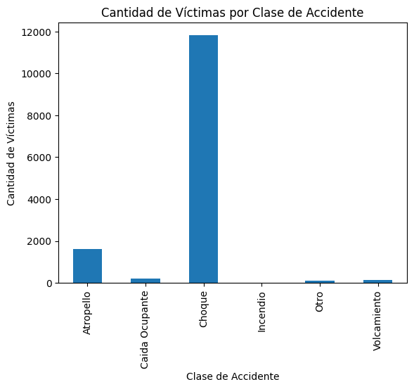
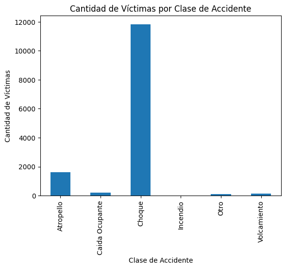
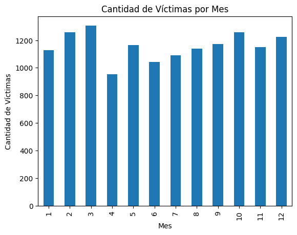
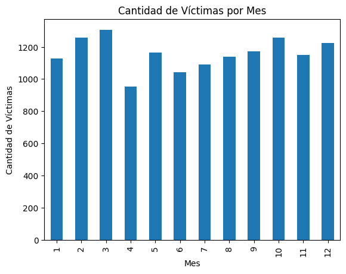

Our initial model selection
Looking at the nature of the data and analyzing the information
within it, we have come to the initial conclusion that with this
data, we might be able to predict whether a person survives a car
accident or just gets injured but stays alive.
We have decided to use this condition as our model's output, and for
the inputs we have decided to take into consideration several
aspects of the victim of the car accident, as well as some
conditions regarding the accident itself.
The inputs of our model will be the following
-
CONDICION_VICTIMA: which describes, as stated,
the victim’s role in the accident, for example, was our victim a
pedestrian? Maybe a motor biker, maybe the driver of one of the
vehicles involved in the accident. Etc.,
-
CLASE_ACCIDENTE: which describes, as stated in
the name, what happened exactly in the accident, a car crash?
Someone getting ran over? Etc.,
-
SEXO_VICTIMA: which describes the victim’s
gender, male or female.
-
EDAD_VICTIMA: which describes the age of the
victim.
Our desired output will be GRAVEDAD_ACCIDENTE, which can take two
different values HERIDO (injured, wounded), MUERTO (dead).
Our general objective is to determine, whether or not, these inputs
are sufficient enough to train a machine learning model and, most
importantly, predict with certain level of error, out desired
output.
We have chosen RandomForestClassifier as out first model selection,
because at first we can see that we are trying to predict a binary
categorical variable which can take exactly two cases (death,
wounded), this is the task of a classifier.
Second but not least important is because the data itself is
umbalanced, roughly 2% of the accidents end up on death and the vast
majority of accidents come from crashing (choques). To fix this
umbalance, we use the Ensemble type model RandomForestClassifier,
which is specially optimal for umbalanced classes. As another layer
of protection we also specify a parameter called
class_weight="balanced"
This parameter inverts the class weights in order to give more
importance to the minority class, which is death cases and is what
interests us the most.
As for the inputs of our model, since we have both discrete and
continuous variables we have decided to encode our non-numeric
variables using the One-Hot_Encoding technique, which creates a
column for each unique value our categorical variable can take and
sets 1 to the corresponding column value and 0 for the others. We
have also used a label enconding for out output column to transform
the values HERIDO and MUERTO as 0 and 1 respectively
With this technique we have all our inputs as numerical variables
and we are good to proceed with training the model.
It is important to mention that we have also used a train test
split, using, initially, 30% of the data for testing.
The following image is a representation of some of the
dataframe's columns with the One-Hot_Encoding technique
Before training this model we had to clean our dataframe, since
there was a small amount of rows (less than 200) with unexplicably
high and unrealistic age values like 2024 or values above 100 which
we believe to be not so probable to happen in our context, or with
no especified gender. Hence the reduction in the amount of rows from
our original database
It is important to say that, initially there was a
"another/not-especified" value for the columns "CONDICION_VICTIMA"
and "CLASE_ACCIDENTE" and there were a few rows that made use of
this values, but since the amount was too small and the parameters
associated with these inputs showed to be not so significant when
visualizing the coefficients of the model, we decided it'd be best
to take them out of our final dataframe
The following image is the command used to delete these undesired
rows we had previously mentioned
We will check each of the four main matrics to compare the results
of our model. For that we have decided to run our models several
times, obtaining a distribution of metric values we will later plot
for easier analysis
To obtain the following graphics we ran our model 25 times and
took one sample out to visualize its confusion matrix, for a
better understanding of the amount of false or true
positives/negatives
Here is the confusion matrix of one of the 25 runs, showing us the
proportion of true or false negative/positives
By looking at this one run, we can see that our model is pretty good
at predicting the mayority class, which is "wounded" and stands for
0 in our model, but is not doing good at predicting the minority
class
In the following graphics we will see the distribution of scores
for all 25 runs


 

 
